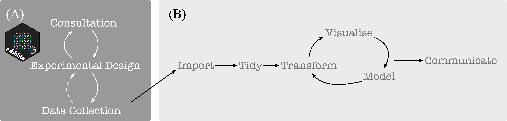

Overview
There are two intermixing goals for edibble:
- defining the grammar of experimental design, and
- provide an R-package that aids in the workflow of constructing an experimental design and serves as an implementation of the so-called grammar of experimental design.
The self-proclaimed grammar of experimental design attempts to define rules and structures that govern the specification of an experimental design. Some (work-in-progress) details can be found in vignette("grammar") where it is serving as the dumping ground of my thoughts for now. The use of the word “grammar” pay homage to the grammar of graphics and grammar of data manipulation which this work is heavily inspired from.
Experimental data
tidyverse is well suited for the data science project workflow as illustrated below in (B) (from Grolemund and Wickham 2017). For experimental data, the statistical aspect begins before obtaining data as depicted below in (A). The focus of edibble is to facilitate work in (A).

The edibble R-package differ considerably to other packages for constructing experimental design with a focus on the whole process and less on the randomisation process (which the other software generally focus and do well on). Some features include:
- declaratively create experimental designs based on experimental components (e.g. units and treatments),
- explicitly specify variables that are to be recorded (e.g. response), and
- set expected values for variables to be recorded which restrict the data entry when the design is exported as an xlsx file,
- plot and print outputs for intermediate constructs of the experimental design with configurations for most graphical elements (see
vignette("output")), - make classical named designs (see
vignette("named-designs")), - add context that also serves as notes about experiment (see
vignette("edibble")).
Examples
Consider an experiment where you want to know what is an effective way of teaching (flipped or traditional style) for teaching a particular subject and how different forms of exams (take-home, open-book or closed-book) affect student’s marks.
There are four classes for this subject with each class holding 30 students. The teaching style can only be applied to the whole class but exam can be different for individual students.
library(edibble)
set.seed(2020)
des <- start_design(name = "Effective teaching") %>%
set_units(class = 4,
student = nested_in(class, 30)) %>%
set_trts(style = c("flipped", "traditional"),
exam = c("take-home", "open-book", "closed-book")) %>%
allocate_trts(style ~ class,
exam ~ student) %>%
randomise_trts()
serve_table(des)
#> # An edibble: 120 x 4
#> class student style exam
#> <unit(4)> <unit(120)> <trt(2)> <trt(3)>
#> 1 class1 student1 traditional take-home
#> 2 class1 student2 traditional take-home
#> 3 class1 student3 traditional open-book
#> 4 class1 student4 traditional take-home
#> 5 class1 student5 traditional closed-book
#> 6 class1 student6 traditional closed-book
#> 7 class1 student7 traditional closed-book
#> 8 class1 student8 traditional open-book
#> 9 class1 student9 traditional take-home
#> 10 class1 student10 traditional take-home
#> # … with 110 more rowsBefore constructing the experiment, you might want to think about what you are recording for which level of unit and what values these variables can be recorded as.
out <- des %>%
record_vars(student = c(exam_mark,
quiz1_mark,
quiz2_mark,
gender),
class = c(room,
teacher)) %>%
expect_vars( exam_mark = to_be_numeric(with_value(between = c(0, 100))),
quiz1_mark = to_be_integer(with_value(between = c(0, 15))),
quiz2_mark = to_be_integer(with_value(between = c(0, 30))),
gender = to_be_factor(levels = c("female", "male", "non-binary", "unknown")),
teacher = to_be_character(length = with_value("<=", 100)),
room = to_be_character(length = with_value(">=", 1))) %>%
serve_table()
out
#> # An edibble: 120 x 10
#> class student style exam exam_mark quiz1_mark quiz2_mark
#> <unit> <unit(12> <trt(2)> <trt(3)> <rcrd> <rcrd> <rcrd>
#> 1 class1 student1 traditional take-home ■ ■ ■
#> 2 class1 student2 traditional take-home ■ ■ ■
#> 3 class1 student3 traditional open-book ■ ■ ■
#> 4 class1 student4 traditional take-home ■ ■ ■
#> 5 class1 student5 traditional closed-book ■ ■ ■
#> 6 class1 student6 traditional closed-book ■ ■ ■
#> 7 class1 student7 traditional closed-book ■ ■ ■
#> 8 class1 student8 traditional open-book ■ ■ ■
#> 9 class1 student9 traditional take-home ■ ■ ■
#> 10 class1 student10 traditional take-home ■ ■ ■
#> # … with 110 more rows, and 3 more variables: gender <rcrd>, room <rcrd>,
#> # teacher <rcrd>When you export the above edibble design using the export_design function, the variables you are recording are constraint to the values you expect, e.g. for factors, the cells have a drop-down menu to select from possible values.
export_design(out, file = "/PATH/TO/FILE.xlsx")
In addition, there is a spreadsheet for every observational level. E.g. here room and teacher is the same for all students in one class so rather than entering duplicate information, these are exported to another sheet for data entry.

There is also support for more complex nesting structures however randomisation is yet to be supported for this. You can always make the structure using edibble and take the resulting data frame to use in other experimental design software. It’s also possible to bring existing data frame into edibble if you want to take advantage of the exporting feature in edibble.
start_design("nesting structure") %>%
# there are 3 sites labelled A, B, C
set_units(site = c("A", "B", "C"),
# each site has 2 blocks except B with 3 sites
block = nested_in(site,
"B" ~ 3,
. ~ 2),
# levels can be specified by their number instead
# so for below "block1" has 30 plots,
# "block2" and "block3" has 40 plots,
# the rest of blocks have 20 plots.
plot = nested_in(block,
1 ~ 30,
c(2, 3) ~ 40,
. ~ 20)) %>%
serve_table()
#> # An edibble: 190 x 3
#> site block plot
#> <unit(3)> <unit(7)> <unit(190)>
#> 1 A block1 plot1
#> 2 A block1 plot2
#> 3 A block1 plot3
#> 4 A block1 plot4
#> 5 A block1 plot5
#> 6 A block1 plot6
#> 7 A block1 plot7
#> 8 A block1 plot8
#> 9 A block1 plot9
#> 10 A block1 plot10
#> # … with 180 more rowsLimitations
Currently, edibble:
- expects you to know the number of units available from the start. Unknown numbers will be supported in future versions.
- does not support designs where the size of the block is less than the total number of treatments (e.g. incomplete block designs or fractional factorial designs). This is to come.
- does not necessarily create the most efficient design. E.g. balanced incomplete block designs have a special property and an adhoc solution may be required to make sure you can generate a design with this special property. This is just a nature of generalised tools and edibble doesn’t aim to be the best for everything, but hopes others developers can build on the edibble framework to create their own specialist design.
- in theory, edibble should support experiments that are not comparative experiments but this is not tested.
- does not do enough testing so design should be diagnosed after construction (which should be done regardless of how much testing edibble implements).
Acknowledgement
edibble is hugely inspired by the work of Tidyverse Team. I’m grateful for the dedication and work by the Tidyverse Team, as well as R Development Core Team that supports the core R ecosystem, that made developing this package possible.
Tidyverse familiarity
The implementation in edibble adopt a similar nomenclature and design philosophy as tidyverse (and where it does not, it’s likely my shortcoming) so that tidyverse users can leverage their familiarity of the tidyverse language when using edibble. Specifically, edibble follows the philosophy:
- main functions do one thing and have a consistent form of
<verb>_<noun>(e.g.set_unitsandrecord_vars) where the nouns are generally plural. Exceptions are when the subject matter is clearly singular (e.g.start_designandset_context); - pipable functions;
- all dots arguments are dynamic dots;
- duplicate names repaired with same option as
tibblefor additions to edibble graph; - (WIP)
tidyselectapproach to setting edibble variable types; - ability for developers to extend certain components. Currently only supported for others to contribute their own classical named experimental designs via
prep_classical_; - the specification of complex nested structure drawing similarity to
dplyr::case_when(LHS is character or integer for edibble however).
Code of Conduct
Please note that the edibble project is released with a Contributor Code of Conduct. By contributing to this project, you agree to abide by its terms.